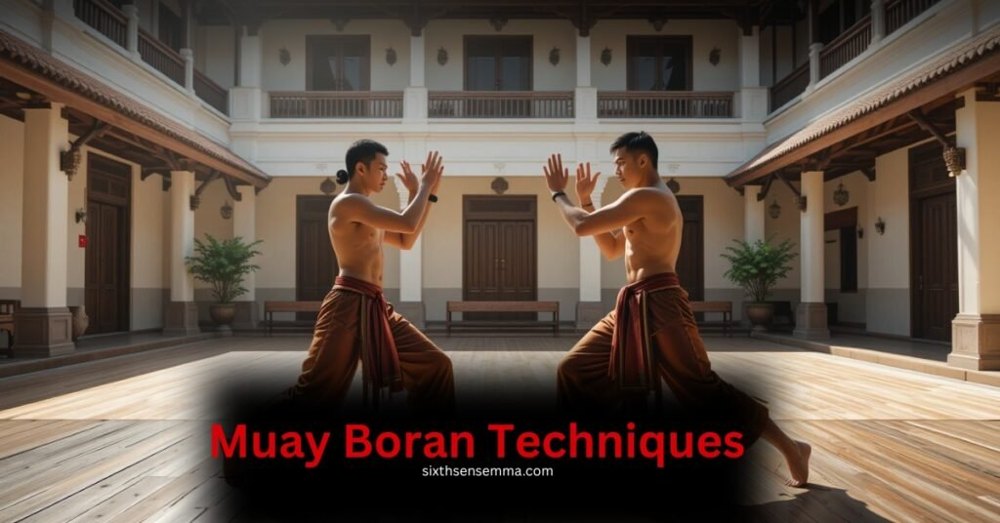
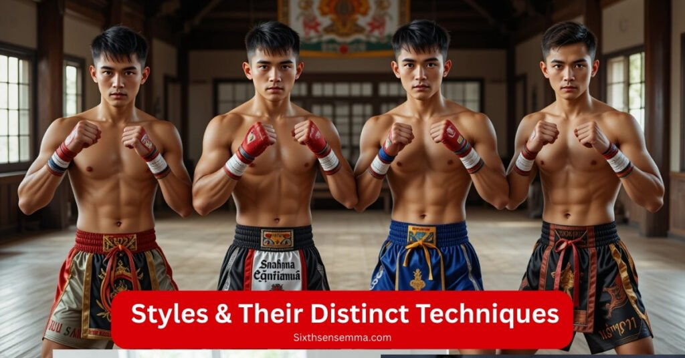
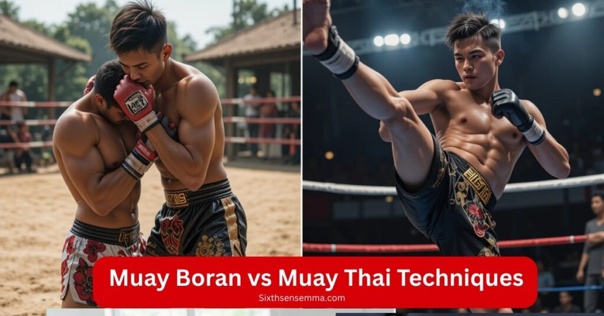

Top 10 Muay Boran Techniques every Beginner should Know

Muay Boran isn’t just another martial art it’s the original Thai fighting system that came long before modern Muay Thai. Developed on real battlefields during the Sukhothai and Ayutthaya periods, this art was designed for survival when weapons were lost in close combat.
Soldiers, villagers, and royal bodyguards all used it not just for defense, but to protect their homeland with skill and precision. What sets Muay Boran apart is its raw, effective use of the entire body punches, elbows, knees, shins, and even the head turning the fighter into a living weapon.
This article explores the 10 most impactful Muay Boran techniques, each one built on centuries of real world experience and refined through ritual, culture, and combat.
You’ll also discover how different regional styles like Chaiya, Korat, Lopburi, and Thasao bring their own flavor to the art. Whether you’re a beginner curious about its basics, or a seasoned fighter looking to connect deeper with its roots, this guide gives you everything from technique breakdowns to modern training at places like SixthSense, where tradition and real skill meet.
Overview of Muay Boran
Muay Boran is an ancient martial art from Thailand with deep roots in the 13th–18th century Sukhothai and Ayutthaya kingdoms, where Siamese soldiers were trained in hand to hand combat for when their weapon failed on the battlefield.
Unlike modern boxing, this traditional form was both armed and unarmed, used by military personnel and ordinary people alike as a way to fight and protect themselves. Whether it was for self defense, war, or cultural festivals, Muay Boran was more than just fighting; it was part of how a kingdom defended itself and expressed identity.
At our training space, I’ve seen how learning Krabi Krabong alongside Muay Boran enhances understanding, as the two arts often developed together. What stands out most is how this combat form shows the reliance on both staff and personal skill in real situations.
Royal bodyguards, military, and even villagers all used it, proving it wasn’t limited to just elites. Today, this art is still alive, used in demonstrations and preserved by those who appreciate its available techniques and real world value.
What is the Nine Limb System?
The Nine Limb System in Muay Boran goes beyond the Art of Eight Limbs seen in Muay Thai, by including the head as a ninth limb turning the body into a complete weapon for real close range impact. I’ve trained with fighters who mastered headbutts not just for aggression but for their disorienting, cutting effect, especially when used in clinches or sudden dives like the classic Hermit Dives move.
You’ll find the elbows, knees, shins, and hands working together for powerful strikes, including jabs, hooks, crosses, and even grabs to control the torso and limit the opponent’s reach.
One time during sparring, I took a roundhouse directly to the front ribs, right after a quick stealth diving move that came out of nowhere it reminded me how unforgiving this system can be when executed with proper power and timing. This style teaches you to respond from any angle, making your body a weapon in both offense and defense.
Why Nine Limbs Is Important for Muay Boran?
The Nine Limb System in Muay Boran isn’t just about more weapons it’s about survival, control, and cultural performance. Unlike Muay Thai, which became a sport with gloves, rounds, and timed rules during the 20th century, Muay Boran was built for real fights, often seen in festivals or in front of King Rama VII at courts, where it evolved as both spectacle and technique.
- Complete Weapon :Adding the head as a ninth limb turns the body into a complete weapon, ideal for close range impact and raw sel defense.
- Cultural Legacy :This system reflects how Muay Boran was performed publicly for Rama VII and in festivals, long before it was banned or modernized.
- Real Survival Technique : Before official rules and rounds, this was a battlefield survival style. I’ve seen how headbutts, Hermit Dives, and stealth attacks still work in modern training.
- Timing and Control: To precisely control the torso and limit the opponent’s reach, fighters employ clinches, grabs, and combos of elbows, knees, shins, and hands, such as hooks, crosses, and jabs.
- Adaptable Offense and Defense : The system teaches how to respond quickly from any angle, using both offense and defense at once, making it far more versatile than just relying on the Art of Eight Limbs
Key Technique Categories
Mae Mai : Basic, powerful strikes and defenses
Mae Mai, known as the mother techniques of Muay Boran, are the foundational moves every practitioner must master to build control, timing, and defensive structures. These are not just simple moves they’re essential, sharp, and designed for close range striking, grabbing, and counters that can stop an opponent’s attacks effectively.
Hak Nguang Aiyara the elephant’s thigh break shows how an abrupt move can unbalance the enemy by targeting the neck or trunk, even when defending from a spin or push. Techniques like Jorakhe Fad Hang (the crocodile’s tail sweep) and Inao Taeng Krit reveal how fast, rotational strikes land surprise hits to the eye, head, or ribs. Piercing the Dagger and Dap Chawala are equally effective in damaging the abdomen, chest, or intercepting teep kicks.
Whether it’s blocking, catching, or delivering elbows, the purpose behind each technique is clear: to dominate from the middle range, maintain distance, and create openings. These moves may seem basic, but they are the core of Muay Boran’s strength every move is about building strong defensive reactions and launching attacks with full damage potential, just as a soldier once would on the battlefield.
SIXTH SENSE MMA included, teach 15 signature Mae Mai techniques. Some key examples are Hak Nguang Aiyara, Jorakhe Fad Hang, Piercing the Dagger, and Dap Chawala, each with its unique approach to control and striking.
Look Mai : Advanced combos, counters, and finishing moves
Look Mai, often called the child techniques of Mae Mai, take things to a true advanced level with complex sequences, tactical counters, and brutal finishing blows. At SIXTH SENSE MMA, I’ve seen how fighters evolve by learning to use sidestepping, evasive movements, and sudden 180° turns to create unpredictable angles for attacks like Flipping the Earth or the crushing Hermit Crushing Elbow a finisher that aims for the skull or throat with devastating power.
Techniques such as Hanuman Thawai Waen or Hong Peek Hak don’t just rely on strength they show the complexity and sophistication of this art. One fighter I watched used Bod Ya with a tight shoulder roll and launched a downward uppercut that ended the match; it was a perfect finish.
Look Mai chains moves like double punches, quick climb strikes, and intercepted knees that strike mid move each one a fight ending opportunity. These are the lethal, often secretive techniques passed down from masters, including the Ruesi or Hermit traditions, and they reflect not just skill but mastery of timing and placement.
Whether it’s in the ring or in training, this level shows how powerful and tactical Look Mai really is when used to dominate an opponent’s rhythm and land the final blow.
Highlighted Look Mai include:
- Flipping the Earth : A sudden, rotational takedown that throws the opponent off balance, targeting their legs or torso to break control and reset distance.
- Hermit-Crushing Elbow : A devastating downward elbow aimed at the skull or throat, often used after a sidestep or 180° spin.
- Hanuman Thawai Waen : Inspired by the monkey god Hanuman, this move uses a fast punch combination followed by an aggressive forward attack that closes distance with surprise.
- Hong Peek Hak : A shoulder driven move meant to dislocate the opponent’s joint or break their stance by jamming through their defense with brute force.
- Bod Ya : A sleek combination of evasive movement and a sneaky uppercut, targeting the abdomen or chin just after slipping an incoming strike.
- Table of both Mae Mai and Look Mai
| Mae Mai | Look Mai |
|---|---|
| Foundational strikes & counters | Complex combos & finishing techniques |
| ~15 core moves (e.g., Hak Nguang, Jorakhe, Inao) | Signature moves (e.g., Hanuman, Hirun, Ruesi) |
| Quick to learn, hard to master | Unveiled only after mastering Mae Mai |
Specific Top 10 Techniques
| Technique Number | Name | Description |
|---|---|---|
| 1 | Hanuman Thawai Waen | Spinning punch and piercing dagger strike to face and throat. |
| 2 | Phra Ram Yeab Longa | Double uppercuts and snapping strike to skull or chin. |
| 3 | Crocodile Tail Kick | Heel kick to thigh or leg causing dislocation. |
| 4 | Ruesi Bod Ya | Open palm defenses and push-kicks controlling distance. |
| 5 | Fake and Strike | Fake teep followed by reverse push-kick to chest. |
| 6 | Nao Taeng Krit | Shoulder and elbow attack targeting temple and neck. |
| 7 | Batha Loop Phak | Downward palm strike breaking body defense. |
| 8 | Hirun Muan Phaendin | Slam to disrupt flow and control space. |
| 9 | Hong Peek Hak | Arm dislocation technique for close combat dominance. |
| 10 | Kamae Kham Sao | Grip and piercing move to trap opponent’s arm. |
1-Hanuman Thawai Waen
This technique draws inspiration from the agility and strength of the monkey god Hanuman. It involves a fast, spinning motion where the fighter combines a rapid series of punches with a precise piercing dagger strike aimed at vulnerable targets like the face and throat.
The sudden rotation confuses the opponent, making the strike hard to predict and defend against. The goal is to deliver surprise and sharp damage quickly, breaking the opponent’s guard and disrupting their rhythm.
2-Phra Ram Yeab Longa
Throwing two uppercuts quickly one after the other, followed by a cracking, sharp blow to the chin or skull, is an amazing and very effective combo. This technique works as a powerful counter strike, designed to disorient the opponent by delivering fast, crushing blows to sensitive areas. It requires excellent timing and accuracy to execute, often ending fights with its sheer force.
3-Crocodile Tail Kick (Jorakhe Fad Hang)
Named after the whipping motion of a crocodile’s tail, this is a powerful heel strike delivered to the opponent’s thigh or leg. The goal is to dislocate joints or muscles, causing significant pain and imbalance. The movement is swift and unexpected, often catching opponents off guard, reducing their mobility and ability to fight effectively.
4-Ruesi Bod Ya
This technique emphasizes smooth transitions and control through the use of open palms and palm push defense. Practitioners use this flowing style to maintain distance, parry incoming attacks, and prepare for counter attacks with minimal energy expenditure.
5-Fake and Strike
A clever deceptive tactic involving a fake teep kick to mislead the opponent into reacting prematurely. The practitioner follows with a powerful reverse push-kick directed at the chest whenever the opponent is unsteady or determined to defend the fake. This combo exploits timing and space, creating an opening for a powerful finishing strike.
6-Nao Taeng Krit
A precise and targeted attack using the shoulder and elbow to strike vulnerable areas such as the temple and neck. The goal is to disorient the opponent through sudden and unexpected contact with these sensitive spots, often leaving them stunned and off balance. This move requires sharp focus and fast reflexes to exploit even the smallest openings.
7-Batha Loop Phak
A focused downward palm strike aimed at breaking through the opponent’s body defenses. It is designed to target key pressure points and create openings by forcing the opponent to react defensively. The motion generates significant force, making it effective at penetrating blocks or setting up follow up attacks.
8-Hirun Muan Phaendin
This technique is a powerful slam used to disrupt the opponent’s flow and control the fighting space. It involves grabbing or controlling the opponent and using leverage and weight to bring them down forcefully. It’s both a defensive and offensive move that can reset the fight in your favor by breaking the opponent’s balance and momentum.
9-Hong Peek Hak
A strong arm manipulation move aimed at dislocating joints or breaking the opponent’s grip. This technique is especially useful in close range combat where controlling the opponent’s limbs can dictate the outcome. The move requires strength and precise timing to apply maximum pressure without losing balance or control.
10-Kamae Kham Sao
A gripping and piercing technique focused on trapping an opponent’s arm to prevent counter attacks. Once the arm is controlled, the practitioner can execute lethal follow-up strikes, exploiting the opponent’s compromised position. This technique demands great skill in hand control and quick reflexes to capitalize on openings.
Each of these techniques combines power, speed, precision, and tactical deception that embody the essence of Muay Boran’s deadly efficiency. Mastery of these moves requires dedicated practice, timing, and understanding of the body’s vulnerable points.
Styles & Their Distinct Techniques

Muay Boran styles vary by region but share sharp, fast strikes, joint locks, and animal inspired movements. They blend powerful offense with smart defense, using clinches, deceptive footwork, and precise counters to control opponents.
| Style | Key Characteristics | Region | Focus Area |
|---|---|---|---|
| Muay Chaiya | Defensive, wide stance, strong elbows, tight grips | Southern Thailand | Defense, control, elbow strikes |
| Muay Korat | Aggressive, heavy punches, knees, clinching, joint locks | Central Thailand (Korat) | Close combat, grappling |
| Muay Lopburi | Fast footwork, snapping strikes, feints, wide angle attacks | Central Thailand | Speed, deception, striking |
| Muay Thasao | Sharp kicks, elbows, uppercuts, animal like agility, flexible defense | Northeastern Thailand | Agility, wrapping, counters |
Muay Chaiya :
It is one of the oldest Muay Boran styles, known for its strong defensive postures and slow, deliberate motion. Fighters use a wide stance for solid protection, focusing on powerful elbow strikes, clasping, and tight grip to control opponents. Its techniques emphasize wrapping and joint locks, combined with smart, animal inspired movements that maximize agility despite the slower pace.
Muay Korat :
From the Korat region in central Thailand, is a more aggressive style featuring hard hitting buffalo punches, heavy knee strikes, and robust grappling. This style favors clinch work, neck control, and ground control methods similar to jujutsu, making it effective in close quarters. Its fighters often use low guards and tight defense to trap and wear down opponents with a mix of striking and locking.
Muay Lopburi :
Comes from the Lopburi province and is characterized by fast footwork, quick snapping strikes, and deceptive feints. This style is very speed focused, blending jumping and swinging attacks with precise counters. Fighters use wide angle movements and unpredictable tactics to confuse their opponents and create openings.
Muay Thasao :
From the northeastern regions, incorporates smart wrapping and grip techniques that emphasize control and mobility. It mixes snapping diagonal kicks, elbows, and uppercuts with a flexible defense system.
This style is known for using animal inspired movements that mimic creatures like the elephant and monkey, promoting agility and power while maintaining tight defense.Each style reflects its regional history and battlefield needs, contributing to the rich diversity of Muay Boran techniques across Thailand.
Muay Boran vs Muay Thai Techniques

| Aspect | Muay Boran | Muay Thai |
|---|---|---|
| Purpose | Practical battlefield art | Competitive sport |
| Techniques Allowed | Headbutts, groin kicks, joint locks, limb breaking techniques, deep clinch (Chap Hak), no ground strikes | No ground fighting, no joint locks, no groin kicks, and no headbutts |
| Limbs Used | Eight limbs plus head | Eight limbs (hands, elbows, knees, feet) |
| Fighting Style | Brutal efficiency, quick incapacitation | Clean striking, scoring points |
| Rules | No rules, no timed rounds | Structured rules, timed rounds |
| Protective Gear | None | Gloves, protections |
| Scoring | Not applicable | Fair scoring system |
| Safety | Higher risk due to forbidden moves | Focus on safety with banned dangerous moves |
| Clinching | Deep clinch with manipulative locks | Short clinch, limited manipulations |
| Ground Fighting | Some ground control and sweeps allowed | No ground fighting |
| Evolution | Preserves traditional lethal techniques | Evolved for sport with safety and fairness |
Pros of Learning These Techniques
Benefits
- Connects you to rich cultural stories and heritage from the 13th century
- Enhances coordination, muscle control, and sharpens nerves
- Develops practical skills like throws, joint locks, and headbutts
- Improves speed and creates smoother, more decisive movements
- Useful for both self defense and sport fighting
- Preserves ancient martial tradition and meaningful rituals
- Offers a serious, disciplined workout that respects tradition
Are these techniques safe for beginners to practice?
Yes, with a trainer’s guidance, Muay Boran techniques are taught in a controlled, safe way. Beginners start with basic moves, using proper gear and practice to build physical readiness and progress carefully. This structured approach ensures training is serious but accessible and safe for all levels.
Learn These Techniques at SixthSense Real Training, Real Skills
At SixthSense, training happens in small group classes where each student gets hands-on guidance and close attention to ensure safety while mastering complex throws, joint locks, and elbow taps. Our curriculum blends traditional, centuries old Muay Boran and Muay Thai techniques with real world self defense skills.
We focus on building a strong foundation of tight footwork, precise strikes, and effective combos while developing mental resilience and physical responsibility. Training here isn’t just about physical moves.
It’s about embracing the deep cultural appreciation and authentic fighting traditions behind every technique, including the advanced Look Mai sequences that require controlled, thoughtful practice to master. At SixthSense, you learn real skills with respect for the art and its rich history.
Benefits of Training with SixthSense
- Flexible schedules: morning, evening, weekend, and online classes available
- Safe training environment: padded spaces and controlled practice
- Personalized coaching: one on one guidance tailored to your style and needs
- Authentic curriculum: includes Muay Boran styles like Korat, Thasao, Chaiya, and Lopburi
- Body conditioning & strength training: keeps you fit and powerful
- Virtual coaching: train from anywhere with expert support
- Respect for tradition: learning under guidance inspired by old masters
- Correct technique: ensures safety and effective skill development
- Holistic approach: integrates physical fitness with cultural appreciation and martial arts lifestyle
Customer Reviews:
Tina K. – California, USA
“The instructors here are serious about safety, culture, and real fighting techniques. I’ve never felt more confident.”
Jayden H. – Texas, USA
“Every class pushes you to grow. Their knowledge of Boran styles like Korat and Lopburi is unmatched.”
Sarah G. – Florida, USA
“Great for beginners! I started with no fighting experience and now I can pull off advanced counters safely.”
Derek L. – Illinois, USA
“SixthSense isn’t just training it’s a full experience. You learn history, form, and real-world application.”
Emily R. – Georgia, USA
“The feedback they give in class and online sessions made a huge difference. It’s like having a coach at home.”
Nathan J. – Washington, USA
“I joined for self defense but stayed because of how empowering it is. The training feels raw and real.”
Contact Us
Want to start your Muay Boran journey with SixthSense? Click the link below to visit our Contact Us page and speak to our team.
Conclusion
The ten powerful techniques from the crushing elbows and explosive uppercuts to fluid joint locks and deceptive kicks highlight the depth and versatility of Muay Boran. Training in Muay Boran is a journey that connects you to a rich heritage of ancient warriors and their martial arts skills.
It demands discipline, respect, and honesty, emphasizing safety and careful supervision to master complex techniques like throws, headbutts, uppercuts, and joint locks.
This fighting system combines fluid motion, strength, and clever deception, preserving the spirit and culture of Thai temples and battlefields. . It’s a complete art that reflects the depth and purpose of a true martial journey.
FAQ’s
Muay Boran is the ancient Thai martial art developed for battlefield combat, using the full body—including the head—as a weapon. Unlike Muay Thai, which is a regulated sport with safety gear and rules, Muay Boran allows headbutts, joint locks, and groin strikes, making it more brutal and focused on real-world survival.
Yes, with proper instruction. At SixthSense, beginners start with foundational moves and train in a safe, padded environment using protective gear. Coaches ensure a structured, progressive path that balances safety and technique.
The Nine Limb System expands on Muay Thai’s “eight limbs” (hands, elbows, knees, and feet) by adding the head as a ninth limb. This inclusion reflects Muay Boran’s battlefield roots, turning the body into a complete weapon for offense and defense.
Absolutely. With its emphasis on joint locks, headbutts, throws, and deceptive tactics, Muay Boran was built for survival and real-life combat. It’s extremely practical for modern self-defense when trained properly.
Muay Boran isn’t just physical—it carries deep cultural roots, including rituals, myths (like the monkey god Hanuman), and performances. Training helps preserve centuries-old traditions while developing fighting skills.
You can begin by reaching out through the Contact Us page on their website. The team offers guidance for all levels, with flexible class times and personalized programs designed to build strong foundational skills in a safe environment.
Train with us in Coppell
The first class is free. Shorts, a t-shirt and a water bottle. We lend the rest.
Book a free class